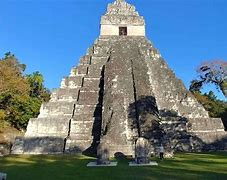
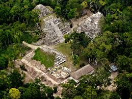

Tikal, uno de los sitios arqueológicos más importantes de la civilización maya, se encuentra en el corazón de la selva de Petén, Guatemala. Declarado Patrimonio de la Humanidad por la UNESCO, Tikal es conocido por sus imponentes pirámides, templos y plazas que datan del siglo IV a.C. hasta el siglo IX d.C. Este majestuoso lugar no solo es un testimonio de la grandeza de la cultura maya, sino también un hogar para una rica biodiversidad que atrae a turistas y aventureros de todo el mundo.
Tikal fue una de las ciudades más poderosas de la civilización maya, y su historia está llena de logros arquitectónicos y avances en astronomía y matemáticas. Los visitantes pueden explorar las impresionantes estructuras, como el Templo I y el Templo II, que se elevan sobre la selva, brindando vistas espectaculares del paisaje circundante. Los restos de sus antiguas plazas y caminos revelan un pasado vibrante, lleno de ceremonias y comercio.
Rodeado de una exuberante selva tropical, Tikal es también un refugio de vida silvestre. Aquí, los turistas pueden observar aves exóticas, monos aulladores y una variedad de especies de plantas y animales. Las caminatas por los senderos dentro del parque ofrecen una experiencia única para los amantes de la naturaleza, permitiéndoles conectarse con el entorno natural y apreciar la biodiversidad.
Los visitantes pueden disfrutar de recorridos guiados que destacan la historia y la arquitectura del lugar, así como explorar el sitio a su propio ritmo. También hay oportunidades para realizar actividades como el avistamiento de aves y la fotografía de paisajes, especialmente al amanecer y al atardecer, cuando el sol ilumina las pirámides.
Para una visita óptima, se recomienda llevar ropa cómoda, calzado adecuado y suficiente agua. Además, es aconsejable planificar la visita con anticipación, especialmente durante la temporada alta de turismo, para aprovechar al máximo la experiencia.
Tikal no solo es un viaje al pasado, sino una aventura que combina historia, cultura y naturaleza, convirtiéndolo en un destino imprescindible para quienes desean explorar la herencia maya en Guatemala.
Yaxhá es un fascinante sitio arqueológico maya ubicado en el corazón de la selva guatemalteca, a orillas del lago del mismo nombre. Con una historia que se remonta al periodo Preclásico, Yaxhá fue un importante centro urbano y comercial que alcanzó su máximo esplendor durante el Clásico. Hoy, es un destino ideal para los amantes de la historia y la naturaleza, ofreciendo una mezcla única de impresionantes ruinas y un entorno natural vibrante.
Yaxhá, que significa "agua verde" en lengua maya, fue habitado desde aproximadamente 1000 a.C., pero se destacó especialmente entre los siglos VI y IX d.C. Durante este periodo, se convirtió en un rival significativo de Tikal, manteniendo interacciones culturales y comerciales que enriquecieron su desarrollo. La arquitectura y las inscripciones encontradas en el sitio narran la historia de sus gobernantes y la vida cotidiana de sus habitantes.
Rodeado de una exuberante selva tropical, Yaxhá es un paraíso para los amantes de la naturaleza. El área alberga una rica biodiversidad, incluyendo aves exóticas como tucanes y guacamayas, así como mamíferos como monos aulladores. La cercanía al lago Yaxhá también brinda oportunidades para la observación de fauna acuática.
Los visitantes de Yaxhá pueden disfrutar de diversas actividades, desde explorar las ruinas y aprender sobre la historia maya hasta realizar caminatas por senderos naturales. La tranquilidad del lugar, en comparación con otros sitios más concurridos, permite una experiencia más íntima y reflexiva. Además, la observación de aves y la fotografía de paisajes son actividades populares entre los visitantes.
